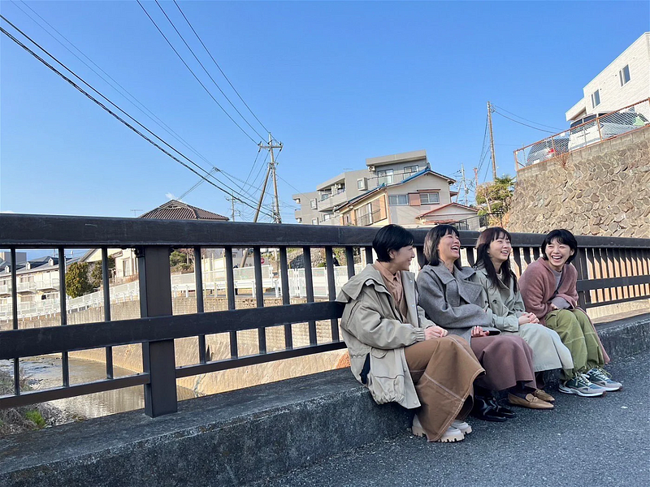

 Image Source: https://www.instagram.com/p/CpsSwuNv8AH/
《重啟人生》（ブラッシュアップライフ）是今年度最熱門的日劇之一，它深深觸動了許多人的心靈。劇中融合了許多平成時代的經典元素，還有不少時代的眼淚，如 BB Call、たまごっち、Game Boy Advance 等等，勾起了人們對於往日時光的美好回憶。此外，這部劇的音樂也十分講究，其中的懷舊日文歌曲更是讓人回想起那些年輕時的種種。故事情節描寫了一生摯友之間的真摯情誼與日常間的閒聊，故事相當令人感動。
這部劇的編劇 バカリズム 過往曾經創作出類似主題的作品，例如《素敵な選 TAXI》，個人也是很推薦這個輕鬆小品。我在觀影的過程中，也不免聯想到另外兩部相關題材的作品，分別是年代有點久遠的日劇《Loss:Time:Life》（ロス：タイム：ライフ） 和近期的韓劇《認識的妻子》（아는와이프），都是發人省思也很有意思的影集。這些穿越或者平行宇宙的影集雖然著重的內容不同，但《重啟人生》卻不同於其他類似作品，它並不著重於人生的懊悔與補救，反而像是掉入不同平行宇宙的時空旅者，重新再過一次不同的人生。雖然在世界觀的設定上可能會讓人有點困惑，感覺好像有一些 Bug，但請帶著愉悅的心情，盡情享受這部滿滿懷舊風日劇想傳達的故事即可。
Familiar Wife | Korea | Drama | Watch with English Subtitles & More ✔️
當影片中響起 ZARD 的《負けないで》時，我的內心不禁感到激動和感傷。坂井泉水的音樂曾經陪伴我度過青澀孤單的學生時光，懷舊音樂真的為本劇加分不少，每每都將人帶回那個單純的年代。
主人公在劇中每一次的重生都是為了能夠重新投胎成為人類，因此，他重新努力積福做好事，從一開始的小愛（為自己）轉變成大愛（為別人），這種不斷重生並自我優化的過程，雖然有點荒誕搞笑，卻是笑中帶淚的觸動人心。這也讓我們反思，為什麼重新投胎成為人類就是最好的選擇呢？那是不是因為我們自己帶著人類中心主義的想法，亦或者是因為人類本身的優越感使然？這也影響著我們該如何好好度過此生。
《重啟人生》給觀眾帶來了很多的思考和感動。它讓人們重新思考自己的生命意義和價值，讓人們意識到生命的珍貴與有限。這部影集讓我們重新回顧過去的歲月，回憶那些美好的時光，同時也讓人們重新思考未來的方向，是值得一看的感人作品。